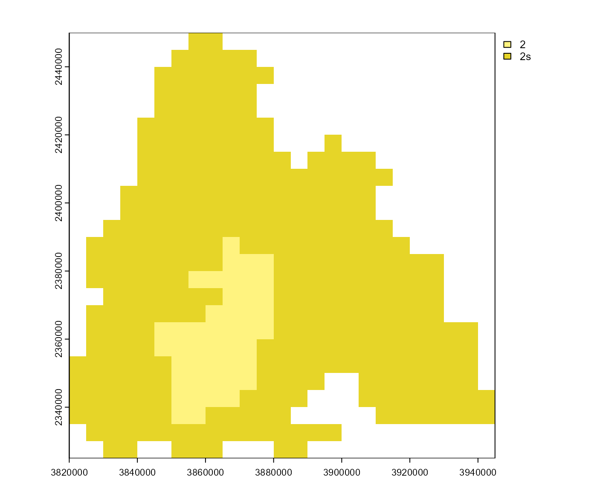

Calculate a phenology (or its subparts) with a specific model.
Usage
phenology(
.model,
.data = NULL,
.dates = NULL,
.win = NULL,
.ext = "tif",
.onset = NULL,
.diapause = NULL,
.mortality = NULL,
.submodels = c("onset", "diapause", "mortality", "development"),
.setup_only = FALSE,
.stations = NULL,
.storage = NULL,
.quiet = FALSE,
...
)
bso_phenology(
.model = "bso",
.data = NULL,
.dates = NULL,
.win = NULL,
.ext = "tif",
.onset = NULL,
.diapause = NULL,
.mortality = NULL,
.submodels = c("onset", "diapause", "mortality", "development"),
.setup_only = FALSE,
.stations = NULL,
.storage = NULL,
.quiet = FALSE,
...
)Arguments
- .model
A phenology model or a model name (see
model(),model_combine()).- .data
Data that will be passed to the model. It can be one of the following:
Character string: The raster data will be loaded from the path specified. The files have to be named like the respective model inputs.
Named list: Each element contains the input data according to its name.
Data frame (station data): Should have the columns
dateandstation(name of the station). Additional columns have to be named like the respective model inputs.Additionally, data can be passed through the ... argument.
Look at the model application manuals to find out which inputs are required by a specific model:
model.bso.apply,model.phenips.apply,model.rity.apply,model.chapy.apply,model.joensson.apply,model.lange.apply,model.phenips_clim.apply.- .dates
Vector of dates that the data should be restricted to.
- .win
SpatExtent to set a window (area of interest) if
.datais a path to load the raster data from.- .ext
Extension of the files that should be used if
.datais a path to load the raster data from.- .onset, .diapause, .mortality
Pass custom or precalculated phenological events to the model. See
create_eventsto find out how to create events manually. Alternatively, the return value ofget_onset_rst(),get_diapause_rst()orget_mortality_rst()could be used (withas_doy = FALSE) to extract the respective phenological event from another phenology. In that case, that phenology must match the temporal and spatial extent of the other inputs.- .submodels
Character vector. Specifies which submodels should be calculated. Can be a subset of
c('onset', 'diapause', 'mortality', 'development').- .setup_only
If
TRUEonly the inputs will be preprocessed without calculating any submodels. The preprocessed data can be used as input for otherphenology()calls and can be accessed viaget_input_data().- .stations
Assign stations to the phenology. See
stations_create()for details.- .storage
If set, the path specified here will be used to save the (intermediate) results. If
phenology()is called successively with a growing amount of data, the calculations will continue where they stopped. This can save calculation time especially for large raster inputs. Note that this will only work of raster inputs and ifterra::sources()is not empty. Otherwise the results of the calculations will be saved but successive calculations are not possible. If no input data is passed, the phenology will be loaded from the storage.- .quiet
If
TRUE, messages are suppressed.- ...
Parameters that will be passed to the model. Must be named according to the model inputs. See
.datafor alternative ways to pass data to the model.
Value
A phenology as a list. Look here to find out how a phenology can be analysed. It is not recommended to access the list elements directly.
Functions
bso_phenology(): As BSO works a bit different than the other models, a seperate phenology function is implemented for this model. Note that while the onset and the development submodels are needed to be taken from BSO, the diapause and the mortality submodels are compatible with other models.The function returns a BSO phenology as a list. Look here to find out how a BSO phenology can be analysed. It is not recommended to access the list elements directly. To be able to use the functions that are available for phenology objects returned by
phenology(), callbso_translate_phenology().
Examples
# \donttest{
# calculate phenology
p <- phenology('phenips-clim', barrks_data())
#>
#> === calculate phenology with model `phenips-clim` ===
#>
#> -- setup --
#> parameter fly
#> parameter dd_onset
#> parameter dd_onset_alt
#> parameter btmean
#> parameter btmax
#> parameter teff
#> > calculate amplitude
#> > get effective temperature from temperature/amplitude
#>
#> -- onset --
#> > calculate the base onset
#> > add 0 degree days to get the onset of the first 10 % beetles
#>
#> -- diapause --
#>
#> -- mortality --
#>
#> -- development --
#> > generation 1
#> > generation 2
# plot calculated generations
gens <- get_generations_rst(p)
terra::plot(gens)

# }